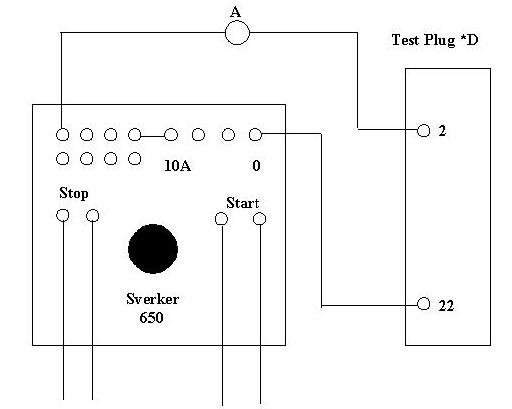

|
 |
|
Protection
|
Technical Procedure
|
|
|
Equipment
Busbar Protection with Breaker Failure
MBCZ16,
MBCZ12
GEC
|
Document
No: BBP-013-r0 |
|
Issued
to: EL-Kureimat PS |
|
Status: APPROVED |
|
Procedure:
Using
SVERKER 650,
(P1-Y1) |
Approved Date:
28
May 2005 |
|
Date to
be Reviewed: May 2010 |
Introduction
This document lists the testing
procedure P1, which must be performed on an annually bases as indicated by Y1
in the above title block
The MBCZ16 Bus bar protection is a
Modular, solid state, low impedance blast differential based on the
circulating current principle, dual cratered of protection, provides
continuous supervision of CT secondary circuits and constant monitoring of
vital circuits extremely stable up to the max switch gear.
The first draft initiated by
eng. Hany Bassuony, tested by eng. Hany Bassuony, accepted by eng. Mahmoud
Badawy general director, revised by Dr. Sarwat Sabry, approved by eng.
Mohamed Gamal El-Deen Diab Kureimat PS Head sector.
This document certified by
eng. Gamal Abdel Wahab UEEPC MPIS
coordinator, and inspection & quality control general
director
Safety Precautions
-
A work permit must be issued and the maintenance staff should carry the
suitable safety category
-
Maintenance staff should be well trained
qualified or directly supervised by some one who is
-
Safety fence with caution marks
surrounding the work area is required
-
Personal protective equipment must be
used as safety shoes, helmet ... etc
-
Outage arrangement is required.
-
Switches off DC supply before inserting or with drawing any
card from the relay .
-
Before with drawing MBCZ 16 modules from its case fit CT shorting to test
bluge before inserted into test
block.
-
The generator must be isolated
Tools and Equipment
-
Sverker 650 test set.
-
Test
leads
-
Test plugs MMLB01
Work to be Carried Out
-
Testing the differential relay ( Zone and Zone check ) of Bus #.
-
Testing the associated Breaker fail modules .
Preparation
-
Obtain outage for the Bus Bar # protected by this relay.
-
Check that the bus bar circuit breakers and the disconnect switches are opened
and tagged.
-
Turn the Key switch on the alarm unit to the PROTECTION OUT position.
-
Inspect the CT secondary circuits and all cabling supplying the relaying
including matching CT.
-
Use the station drawings to isolate the following
-
Use the
station drawings to get the following:
-
The breaker fail initiation of
each Bay.
-
Trip contact to stop the injection while testing
differential for each Bay.
-
Back trip contact to stop the injection while testing
Breaker fail for each Bay.
-
The input points of current injection of each Bay on its
test plug per phase for Example
Phase A at 2 , 22 on test plug ( *D ) .
Phase B at 4 , 24 on test plug ( *D ) .
Phase C at 6 , 26 on test plug ( *D ) .
Note :
Relates to the tested Bay
-
Turn the Key switch on the alarm unit to the PROTECTION IN position.
Testing Procedure(s)
Test the Breaker Fail Module
Phase A
-
Insert the test plug *D
-
Connect the circuit as shown in
figure 1.
-
Increase the current slowly
from zero until the breaker fail module operates and the injection is stopped
.
-
This is the pick up current,
compare it with the setting.
-
Make sure that this module gives
Trip and Back Trip and all other modules connected to this bus bar give Trip
only.
-
Make sure that, the trip and Back
trip lock out relays of the tested Bay pick up and close their contacts.
-
Make sure that, the trip lock
out relays of other Bays connected to this bus bar pick up and close their
contacts.
-
Apply current ( just more than the
pick up current ) suddenly and measure the trip time.
-
Record the results in the test
sheet.
-
Repeat this test for phases B and C
Phase B at 4 , 24 on test plug ( *D )
Phase C at 6 , 26 on test plug ( *D ) .
Note: Relates to the tested Bay
Test The
Differential Relay
injection via test plug *D
Phase A
-
Connect the circuit as shown in
figure 2.
-
Increase the current slowly from zero
until the main alarm appears this is the alarm current. continue increasing the
current until the zone and zone check trip and the injection is stopped.
-
Make sure, that phase A led lights in
each of zone and zone check modules.
-
Make sure, that all breaker fail
modules connected to this bus bar pick up and give trip only.
-
Apply current ( just more than the
pick up current ) suddenly and measure the trip time.
-
Record the results in the test
sheet.
-
Repeat this test for phases B and C.
Note : Phase B at 4 , 24 on test plug ( *D ) .
Phase C at 6 , 26 on test plug ( *D ) .
Relates to the tested Bay
repeat the
Test steps of 1 and 2 for each Bay connected
to this Bus Bar.
-
After finishing the tests, Turn the
Key switch on the alarm unit to the PROTECTION OUT position. key.
-
Restore all disconnected wires.
-
Turn the Key switch on
the alarm unit to the PROTECTION OUT position.
Note:
Relates to the tested bay

To
back trip contact
to breaker fail initiation
Figure 1: Circuit Connection for Breaker failure
Test Phase A

To
trip contact
Figure 2: Circuit Connection for Differential
Test Phase A
Note: relates to the tested bay
Test Sheet
Relay function :
Bus Bar Protection ( Differential and Breaker Fail)
Manufacturer : CEC
Relay type : MBCZ16
& MBCZ12
Relay
Settings
Breaker
Failure Setting
Current = A Time = m sec
Differential
Setting
Alarm =
A Trip = A
Test Results
Circuit
Breaker No. .......
| |
Breaker Fail |
Differential |
|
Alarm ( A ) |
Trip |
|
Current ( A ) |
Time ( msec ) |
Current ( A ) |
Time ( msec ) |
|
R |
|
|
|
|
|
|
S |
|
|
|
|
|
|
T |
|
|
|
|
|
Checked by:
Signature:
Date: